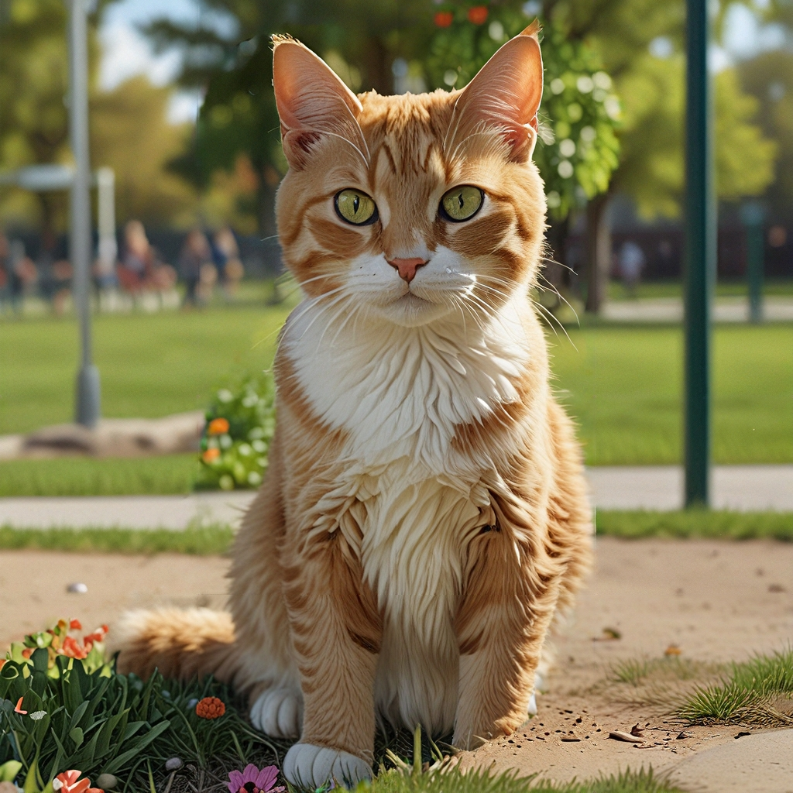

重绘功能提示
在 AiCasso 中使用 Inpaint 功能可以通过填充或替换特定区域来修改图像。无论您是想增强现有图像还是完全改变某些部分，AiCasso 都使这个过程变得简单。只需选择您想要更改的区域，提供提示，然后让 AiCasso 发挥其魔力。
选项：
强度：
强度选项控制提示对原始图像的更改程度。范围从 0 到 1。值为 0 意味着原始图像几乎没有改变，而值为 1 意味着原始图像几乎完全被您描述的新细节替换。可以将其视为您的更改将有多“强”。
增强风格：
增强风格选项允许您为修改的区域添加特定的艺术或主题风格。您可以从多种风格中选择，例如：
工作原理：
示例：
提示 1： "公园里的一只超现实主义猫的图像。"

结果： AiCasso 将生成一只公园里的超现实主义猫，完美填充涂抹区域，展现出逼真的纹理和光影。
提示 2： "公园里的猫，具有超现实主义风格，强度为 0.7。"
结果： 这将创建一只公园里的超现实主义猫，修改强度设置为 0.7，将新元素平滑地融入原始图像。
增强风格
不确定选择哪种风格？别担心！只需提到您想到的任何风格，即使语法不正确，AiCasso 也会从可用的增强风格列表中找出。
- 默认： 一种平衡和中性的风格，没有任何特定的艺术影响。
- 增强： 稍微改善细节和整体美感。
- 电影女神： 添加戏剧性的、电影般的效果，具有强烈的光影对比。
- 抽象表现主义： 强调抽象形式和生动的色彩飞溅。
- 学术： 为图像增添学术和古典的气息。
- 动作人物： 生成具有夸张和动态风格的动作人物图像。
- 可爱的 3D 角色： 生成可爱、卡通风格的 3D 角色。
- 可爱风： 强调可爱和迷人的风格，典型于可爱文化。
- 艺术装饰： 使用艺术装饰时期的几何和装饰风格。
- 新艺术： 添加流畅的线条和自然元素，典型于新艺术。
- 星际气氛： 创建神秘和超凡的氛围。
- 先锋派： 专注于创新和实验性的艺术表现。
- 巴洛克： 使用巴洛克时代戏剧性、细致和华丽的风格。
- 包豪斯风格海报： 反映包豪斯的极简和功能设计原则。
- 蓝图示意图： 生成类似技术蓝图的图像。
- 漫画： 生成夸张、卡通风格的肖像。
- 单色艺术： 使用平坦、鲜明的颜色，典型于单色动画。
- 角色设计表： 专注于适合动画的干净、清晰的角色设计。
- 古典艺术： 模仿古典古代的精致和理想化的艺术风格。
- 色域绘画： 以大面积单色来创建平坦的色彩平面。
- 彩色铅笔艺术： 模仿彩色铅笔画的质感和外观。
- 概念艺术： 优先考虑思想和概念，而非美学或物质关注。
- 构成主义： 反映构成主义运动的工业、几何风格。
- 立体主义： 将物体分解为几何形状，并以抽象形式呈现。
- 达达主义： 强调荒谬、非理性和反艺术美学。
- 黑暗幻想： 创建一种阴郁、哥特式的氛围，带有黑暗和诡异的元素。
- 阴暗情绪氛围： 使用低光和阴影来营造阴郁的氛围。
- DMT 艺术： 以生动、迷幻的视觉效果为特色，灵感来自 DMT 体验。
- 涂鸦艺术： 使用生动的街头风格美学，典型于涂鸦和城市壁画。
- 哈莱姆文艺复兴艺术： 反映哈莱姆文艺复兴的丰富文化和艺术表现。
- 高端时尚： 强调高端时尚的流畅、精致和先锋美学。
- 田园： 创建宁静、平和、常常是田园的氛围。
- 印象派： 使用松散的笔触和生动的色彩来捕捉光和氛围的效果。
- 信息图绘画： 强调清晰、视觉吸引人的布局，以图形方式呈现信息。
- 墨水滴落绘画： 使用墨水在绘画中创造流动、滴落的效果。
- 日本墨水绘画： 模仿日本墨水艺术的传统笔触技巧和美学。
- 整齐摄影： 强调物体的整齐和有序排列，通常从上方拍摄。
- 明亮愉快的氛围： 使用明亮的颜色和光线来创造愉快和振奋的氛围。
- 标志设计： 专注于创建干净、可识别的标志和品牌元素。
- 奢华优雅： 强调复杂和奢华，通常具有丰富的质感和材料。
- 微距摄影： 专注于极近距离拍摄，通常揭示肉眼不可见的细节。
- 曼荼罗艺术： 创建复杂、对称的图案，灵感来自传统曼荼罗设计。
- 马克笔绘画： 模仿马克笔绘画的鲜明、活泼的线条和颜色。
- 中世纪主义： 反映中世纪时期的艺术和设计美学。
- 极简主义： 强调简单性和将形式简化为其基本元素。
- 新巴洛克： 复兴巴洛克时期奢华、戏剧性的风格，带有现代影响。
- 新拜占庭： 将拜占庭帝国的华丽宗教艺术风格与当代元素结合。
- 新未来主义： 专注于未来主义设计，通常具有流畅、高科技的美学。
- 新印象主义： 使用小而独特的色点来创建图像，灵感来自新印象主义运动。
- 新洛可可： 复兴洛可可时期复杂、装饰性的风格，带有现代元素。
- 新古典主义： 模仿古典古代的艺术和设计美学，强调和谐与简单。
- 光学艺术： 通过几何图案和对比创造视觉错觉和效果。
- 华丽和复杂： 专注于高度详细、复杂的设计，注重装饰。
- 铅笔素描绘画： 模仿铅笔素描的质感和外观。
- 波普艺术： 使用大胆的颜色和受流行文化和大众媒体启发的图像。
- 洛可可： 反映洛可可时期复杂、装饰性的艺术风格，强调轻盈和优雅。
- 剪影艺术： 使用光与影之间的强烈对比来创建大胆的剪影图像。
- 简单矢量艺术： 强调干净、几何形状和平坦的颜色，典型于矢量艺术。
- SketchUp： 模仿使用 SketchUp 软件创建的 3D 模型的外观和感觉。
- 蒸汽朋克： 将维多利亚时代的美学与蒸汽动力技术结合，创造出复古未来主义风格。
- 超现实主义： 将现实与梦幻般的图像融合，创造超现实、幻想的场景。
- 至上主义： 专注于基本几何形状和有限的色彩调色板，灵感来自至上主义运动。
- Terragen： 模仿使用 Terragen 软件创建的逼真计算机生成的风景。
- 宁静放松的氛围： 使用柔和的颜色和宁静的图像来创造和平、宁静的环境。
- 贴纸设计： 专注于创建适合贴纸的有趣、卡通风格的图像。
- 鲜艳的边缘光： 强调围绕主题的明亮边缘光，创造引人注目的效果。
- 体积光： 使用光束和气氛效果来创造深度和维度。
- 水彩： 模仿水彩画的柔和、流动的质感。
- 异想天开和有趣： 专注于轻松、富有想象力和常常古怪的图像。
- 清晰： 增强清晰度和边缘定义，以获得更清晰的外观。
- 杰作： 强调高质量、详细和精致的艺术作品。
- 照片： 追求逼真和生动的摄影质量。
- 负片： 反转颜色以创建摄影负片效果。
- 广告 - 广告： 专注于适合广告的干净、专业的视觉效果。
- 广告 - 汽车： 为动态和精致的汽车广告量身定制视觉风格。
- 广告 - 企业： 强调适合企业环境的流畅、专业设计。
- 广告 - 时尚编辑： 突出时尚编辑中使用的时尚、高端外观。
- 广告 - 食品摄影： 优化图像以获得食品摄影中典型的生动和诱人的外观。
- 广告 - 美食摄影： 强调美食摄影中丰富、细致的美学。
- 广告 - 奢华： 专注于适合奢侈品牌的奢华、高端风格。
- 广告 - 房地产： 突出房地产广告中典型的干净和诱人的视觉效果。
- 广告 - 零售： 强调适合零售广告的吸引人、以消费者为中心的风格。
- 超现实主义： 力求极其详细、逼真的视觉风格。
- 点彩画： 使用小而独特的色点来创建图像，灵感来自点彩画运动。
- 迷幻： 强调生动的颜色和受迷幻艺术启发的超现实视觉效果。
- 文艺复兴： 反映文艺复兴艺术的和谐、古典风格。
- 排版： 专注于文本和字体的创意和艺术性使用。
- 未来主义生物机械： 将未来主义和生物机械元素结合，创造出高科技、有机风格。
- 未来主义生物机械赛博朋克： 将生物机械和赛博朋克美学结合，创造出粗犷、未来感的外观。
- 未来主义赛博netic： 专注于高科技、赛博netic视觉效果。
- 未来主义赛博netic机器人： 强调具有未来感的机器人和赛博netic设计。
- 未来主义赛博朋克城市景观： 反映赛博朋克艺术中典型的粗犷、霓虹灯城市景观。
- 未来主义科幻： 专注于未来主义和科幻启发的美学。
- 未来主义复古赛博朋克： 将复古和赛博朋克元素结合，创造出怀旧而又未来感的风格。
- 未来主义复古： 将未来主义视觉与复古设计元素结合。
- 未来主义蒸汽波： 强调蒸汽波艺术中典型的怀旧、超现实视觉效果。
- 游戏泡泡： 专注于在休闲游戏中常见的有趣、泡泡般的美学。
- 游戏赛博朋克： 将游戏设计元素与赛博朋克美学结合。
- 游戏格斗： 反映格斗游戏中典型的动态、激烈风格。
- 游戏GTA： 模仿《侠盗猎车手》游戏中典型的粗犷、城市风格。
- 游戏马里奥： 专注于马里奥游戏中典型的生动、卡通风格。
- 游戏我的世界： 模仿《我的世界》中典型的方块、像素化风格。
- 游戏宝可梦： 反映宝可梦游戏中典型的生动、动漫风格。
- 游戏复古街机： 强调复古街机游戏中典型的怀旧、像素化风格。
- 游戏角色扮演幻想： 反映角色扮演游戏中典型的详细、幻想启发的美学。
- 游戏策略： 专注于策略游戏中典型的干净、功能性设计。
- 游戏街头霸王： 模仿《街头霸王》游戏中典型的大胆、动态风格。
- 游戏塞尔达： 反映塞尔达游戏中典型的幻想启发风格。
- 杂项建筑： 专注于干净、精确的建筑效果图。
- 杂项迪斯科： 强调典型于迪斯科文化的生动、霓虹灯美学。
- 杂项梦境： 创建超现实、梦幻般的环境。
- 杂项反乌托邦： 反映典型于反乌托邦环境的粗犷、阴暗视觉效果。
- 杂项童话： 强调典型于童话的异想天开、魔幻元素。
- 杂项哥特式： 反映典型于哥特艺术和建筑的黑暗、华丽风格。
- 杂项颓废： 强调典型于颓废文化的粗犷、原始美学。
- 杂项恐怖： 专注于典型于恐怖的黑暗、诡异和不安的视觉效果。
- 杂项可爱： 反映典型于可爱文化的可爱、迷人风格。
- 杂项洛夫克拉夫特： 强调典型于洛夫克拉夫特小说的诡异、宇宙恐怖。
- 杂项骇人： 专注于黑暗、病态和不安的主题。
- 杂项漫画： 模仿典型于漫画的大胆、动态风格。
- 杂项大都会： 反映现代大都市典型的流畅、城市美学。
- 杂项极简： 强调简单性和将形式简化为其本质。
- 杂项单色： 专注于以单一颜色的不同色调创建的图像。
- 杂项海洋： 反映典型于海洋主题的海洋启发美学。
- 杂项太空： 强调典型于太空环境的广阔、超凡视觉效果。
- 杂项彩色玻璃： 模仿典型于彩色玻璃艺术的复杂、多彩设计。
- 杂项科技服装： 专注于典型于科技服装的未来主义、功能性美学。
- 杂项部落： 反映典型于部落艺术的大胆、文化美学。
- 杂项禅图： 强调典型于禅图艺术的复杂、重复图案。
- 纸艺拼贴： 使用剪纸创建分层、纹理丰富的拼贴。
- 纸艺平面剪纸： 强调平面、剪纸设计。
- 纸艺切纸： 专注于典型于切纸的复杂、折叠设计。
- 纸艺纸浆： 使用纸浆创建纹理丰富的三维形状。
- 纸艺纸卷： 强调典型于纸卷的精致、卷纸设计。
- 纸艺剪纸拼贴： 结合剪纸元素创建分层拼贴。
- 纸艺剪纸阴影盒： 使用分层剪纸创建三维阴影盒。
- 纸艺堆叠剪纸： 专注于分层、堆叠的纸张设计。
- 纸艺厚层剪纸： 强调典型于厚剪纸设计的立体、分层外观。
- 照片外星人： 专注于超现实的外星视觉效果。
- 照片黑色电影： 强调典型于黑色电影的黑暗、阴郁美学。
- 照片魅力： 突出典型于魅力摄影的精致、时尚外观。
- 照片 HDR： 使用高动态范围 (HDR) 创建具有广泛光线和颜色范围的图像。
- 照片 iPhone 摄影： 模仿典型于 iPhone 摄影的干净、现代风格。
- 照片长曝光： 使用长曝光创建动态、运动模糊效果。
- 照片霓虹黑色： 将霓虹灯与黑暗、阴郁的美学结合。
- 照片剪影： 专注于光与影之间的强烈对比，创建基于剪影的图像。
- 照片倾斜移位： 使用倾斜移位效果创建微型、玩具般的外观。
- 3D 模型： 专注于典型于 3D 模型的干净、详细外观。
- 模拟胶卷： 模仿典型于模拟胶卷摄影的颗粒感、纹理外观。
- 动漫： 强调典型于动漫的生动、动态风格。
- 电影感： 创建戏剧性的、电影般的效果，具有强烈的光线和构图。
- 漫画书： 使用典型于漫画艺术的大胆线条和生动颜色。
- 工艺粘土： 模仿粘土模型的纹理、手工制作的外观。
- 数字艺术： 专注于干净、精致的数字艺术作品。
- 幻想艺术： 强调典型于幻想艺术的详细、富有想象力的视觉效果。
- 等距： 使用等距透视创建三维外观。
- 线条艺术： 专注于干净、清晰的线条以创建详细的绘图。
- 低多边形： 使用低多边形 3D 模型创建极简、几何外观。
- 霓虹朋克： 将霓虹灯与赛博朋克的粗犷美学结合。
- 折纸： 专注于典型于折纸的复杂、折叠设计。
- 摄影： 追求逼真、生动的视觉效果。
- 像素艺术： 使用像素化设计创建复古、视频游戏启发的外观。
- 纹理： 专注于丰富、详细的纹理以增强视觉深度。